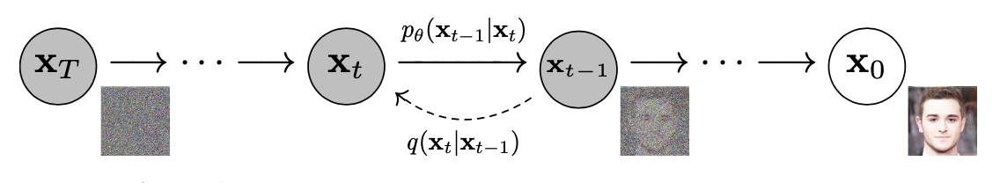
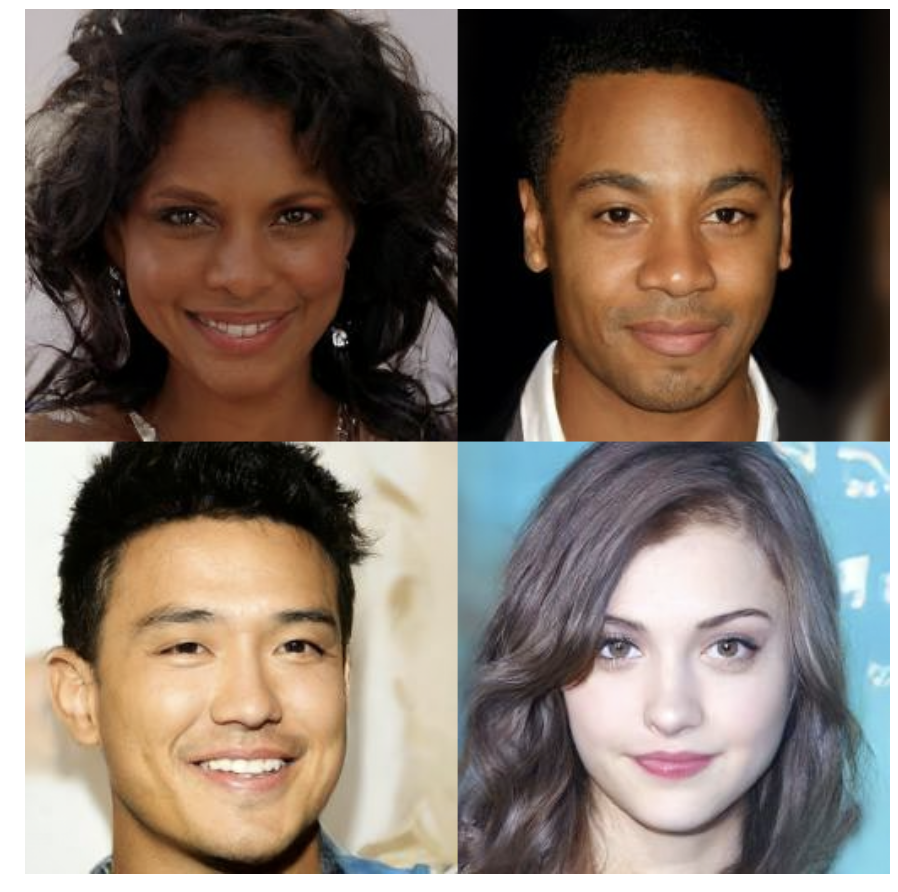
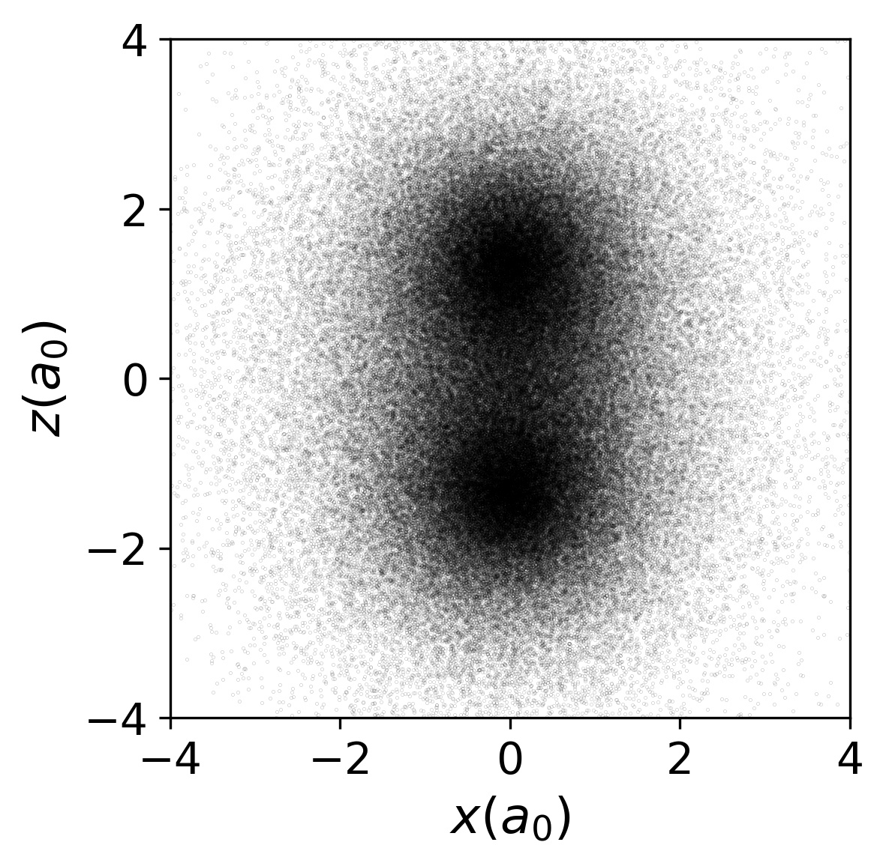

ML and SM 2
University of Cambridge
May 26, 2021
Recap
Lecture 1 introduced idea of Variational Inference (VI)
Turns inference in latent variable models into optimization
Today: how to leverage neural networks & automatic differentiation
Model of choice: Variational Autoencoder
\[ \DeclareMathOperator*{\E}{\mathbb{E}} \newcommand{\cE}{\mathcal{E}} \newcommand{\R}{\mathbb{R}} \newcommand{\bx}{\mathbf{x}} \newcommand{\bz}{\mathbf{z}} \newcommand{\br}{\mathbf{r}} \newcommand{\bv}{\mathbf{v}} \newcommand{\bmu}{\boldsymbol{\mu}} \newcommand{\bSigma}{\boldsymbol{\Sigma}} \newcommand{\bzeta}{\boldsymbol{\zeta}} \]
VI redux
Model defined by prior \(p(z)\) and generative model \(p_\phi(x|z)\)
Similar model for posterior \(q_\theta(z|x)\)
Two representatios of \(p(x,z)\): forward and backward \[ p_\text{F}(x,z)= p_\theta(x|z)p(z),\qquad p_\text{B}(x,z)= q_\phi(z|x)p_\text{D}(x). \] where \(p_\text{D}(x)\) is data distribution
KL between these two models \[ D_\text{KL}(p_\text{B}||p_\text{F})= \E_{x\sim \text{Data}}\left[\E_{z\sim q_\phi(\cdot|x)}\left[\log\left(\frac{q_\phi(z|x)p_\text{D}(x)}{p_\theta(x|z)p(z)}\right)\right]\right]\geq 0. \] or \[ H[p_\text{D}]\leq \E_{x\sim \text{Data}}\left[\E_{z\sim q_\phi(\cdot|x)}\left[\log\left(\frac{q_\phi(z|x)}{p_\theta(x|z)p(z)}\right)\right]\right]. \]
RHS doesn’t involve \(p_\text{D}(x)\) explicitly, only expectation. This is implemented as empirical average over (batches of) data
- RHS often presented as
\[ \E_{x\sim \text{Data}}\left[D_\text{KL}(q_\phi(\cdot|x)||p)-\E_{z\sim q_\phi(\cdot|x)}\left[\log p_\theta(x|z)\right]\right]. \]
First term small when posterior matches prior
Second small when model matches data (reconstruction error)
Variational autoencoder
- Above picture fits into Autoencoder framework

Autoencoder trained to return outputs close to inputs
Not trivial if \(\text{dim}\\,\textbf{h}<\text{dim}\\,\textbf{x}\)!
- We have a loss function for VI in autoencoder framework \[ \mathcal{L}(\theta,\phi)=\E_{x\sim \text{Data}}\left[D_\text{KL}(q_\phi(\cdot|x)||p)-\E_{z\sim q_\phi(\cdot|x)}\left[\log p_\theta(x|z)\right]\right] \]
- We need
- To parameterize \(p_\theta(x|z)\) and \(q_\phi(z|x)\) using NNs.
- To take gradients of the loss function to perform optimization.
- Let’s look at these in turn.
Parameterization
\(\bz\in \R^{H}\), \(\bx\in \R^{D}\)
For encoder \(q_\phi(\bz|\bx)\), choose \(\mathcal{N}(\bmu_\phi(\bx),\bSigma_\phi(\bx))\)
If prior is \(\mathcal{N}(0,\mathbb{1})\) the KL term loss can be evaluated explicitly.
\(\bmu_\phi(\bx)\) and \(\bSigma_\phi(\bx)\) are parameterized using NNs, with architecture adapted to the data e.g. Convolutional neural networks for images
Similarly for decoder \(p_\theta(\cdot|\bz)=\mathcal{N}(\bmu'_\theta(\bz),\bSigma'_\theta(\bz))\)
Second term of loss involves \[ -\log p_\theta(\bx|\bz) = \frac{1}{2}(\bx-\bmu'_\theta(\bz))^T\bSigma'^{-1}_\theta(\bz)(\bx-\bmu'_\theta(\bz))+\frac{1}{2}\log\det\bSigma_\theta'(\bz)+\text{const.}, \] encourages mean output \(\bmu'_\theta(\bz)\) to be close to \(\bx\)
Required expectation over \(\bz\) requires Monte Carlo
Problem: expectation depends on parameters \(\phi\), and we want derivatives
What do we do?
Reparameterization trick
If you have \(\zeta\sim\mathcal{N}(0,1)\) then \(\sigma \zeta +\mu\sim \mathcal{N}(\mu,\sigma^2)\)
Separates parameters from sampling, so that a Monte Carlo estimate of an expectation \[ \E_{x\sim \mathcal{N}(\mu,\sigma^2)}\left[f(x)\right]\approx \frac{1}{S}\sum_{s=1}^S f(\sigma z_s + \mu) \] is explicitly a function of \(\sigma\) and \(\mu\), so derivatives may be taken
Generalizes to multivariate Gaussian: \(\bz\sim \bSigma_\phi^{1/2}(\bx)\bzeta+\mu_\phi(\bx)\).
More practicalities
In practice a single \(\bz\) sample is usually found to provide useful gradients for optimization
Large datasets usually split into batches (sometimes called mini-batches)
For batch of size \(B\) loss function is estimated using \(B\) iid $ _b(0,)$ \[ \mathcal{L}(\theta,\phi)\approx\frac{1}{B}\sum_{b=1}^B\left[D_\text{KL}(q_\phi(\cdot|\bx_b)||p)-\log p_\theta(\bx_b|\bSigma_\phi^{1/2}(\bx_b)\bzeta_b+\mu_\phi(\bx_b))\right] \]
Gradients calculated by automatic differentiation, implemented in all modern DL libraries
There’s a great deal of craft to the business of training…
Interpretability
One promise of latent variable models is an interpretable latent space
Moving in lower dimensional latent space \(\R^H\) allows us to explore the manifold in which the data is embedded in \(\R^D\)
Some issues:
Loss function doesn’t require that the latent space is used at all. If decoder model \(p_\theta(\bx|\bz)\) is rich enough may have \(p_\theta(\bx|\bz)\approx p_\text{D}(\bx)\). By Bayes’ theorem posterior is \[ \frac{p_\theta(\bx|\bz)p(\bz)}{p_\text{D}(\bx)}\approx p(\bz), \] same as the prior! This is posterior collapse
No guarantee that latent space is used nicely, e.g. with variables for colour, shape, position, etc. (disentangled representation). One problem: prior \(\mathcal{N}(0,\mathbb{1})\) is rotationally invariant, so lifting symmetry is necessary.
Compression with VAEs: bits back
In Lecture 1 I suggested that good probabilistic models could give better compression
How does this work for latent variable models like VAE?
Problem, as always, is that model doesn’t have explicit \(p_\text{M}(x)\): marginalizing over latent variables is intractable.
- Recall that loss function of VAE is based
\[ H[p_\text{D}]\leq \E_{x\sim \text{Data}}\left[\E_{z\sim q_\phi(\cdot|x)}\left[\log\left(\frac{q_\phi(z|x)}{p_\theta(x|z)p(z)}\right)\right]\right]. \]
- Split RHS into three terms
\[ \E_{x\sim \text{Data}}\left[\E_{z\sim q_\phi(\cdot|x)}\left[\log\left(q_\phi(z|x)\right)-\log\left(p_\theta(x|z)\right)-\log\left(p(z)\right)\right]\right]. \]
Remember \(-\log_2 p(x)\) is length in bits of optimal encoding of \(x\). Last two terms could be interpreted as
- Given data \(x\) we sample \(z\sim q_\phi(\cdot|x)\).
- We encode \(x\) using the distribution \(p_\theta(\cdot|z)\), then
- Encode \(z\) using the prior \(p(\cdot)\).
- For decoding, go in reverse
- Decode \(z\) using the prior \(p(z)\).
- Decode \(x\) using \(p_\theta(\cdot|z)\)
- We’ll never reach Shannon bound this way, however, because of the negative first term in
\[ \E_{x\sim \text{Data}}\left[\E_{z\sim q_\phi(\cdot|x)}\left[\log\left(q_\phi(z|x)\right)-\log\left(p_\theta(x|z)\right)-\log\left(p(z)\right)\right]\right]. \]
- We need to make the code shorter. How?
Remember that Shannon bound applies in limit of \(N\to\infty\) iid data
Imagine a semi-infinite bit stream mid-way through encoding
We decode part of already encoded bitstream using \(q_\phi(\cdot|x)\)
Result is \(z\sim q_\phi(\cdot|x)\): use for encoding \(x\) as described above
These are bits back: remove \(H(q_\phi(\cdot|x))\) bits on average
Allows us to reach the Shannon bound
When decoding data, the last thing we do for each \(x\) is encode \(z\) back to the bitstream using \(q_\phi(\cdot|x)\)
Related Models
The VAE framework is quite general, and in recent years has been elaborated in various ways.
Markov chain autoencoders (??)
Up to now our encoder and decoder were just Gaussian models
Can we produce a model with a richer distribution?
Make forward and backward models Markov processes with \(T\) steps \[ p_\text{F}(z_0,\ldots x=z_T) = p_\theta(x=z_T|z_{T-1})p_\theta(z_{T-1}|z_{T-2})\cdots p_\theta(z_1|z_{0})p(z_0) \] \[ p_\text{B}(z_0,\ldots \ldots x=z_T) = q_\phi(z_0|z_{1})\cdots q_\phi(z_{T-2}|z_{T-1})q_\phi(z_{T-1}|z_T)p_\text{D}(x=z_T) \]
Loss function is
\[ H[p_\text{D}]\leq \E_{z\sim p_\text{B}}\left[\log \left(\frac{q_\phi(z_0|z_1)}{p(z_0)}\right)+\sum_{t=0}^{T-2}\log\left(\frac{q_\phi(z_{t+1}|z_{t+2})}{p_\theta(z_{t+1}|z_t)}\right)\right]. \]
Can pass to continuous time limit, in which case \(z_t\) described by stochastic differential equation (SDE). \[ dz_t = \mu_\theta(z_t)dt + dW_t \] \(W_t\) is \(\R^H\) dimensional Brownian motion, \(\mu_\theta(z_t)\) is a parameterized drift
One forward and one backward SDE
Model is separate from implementation of dynamics. Solve SDE by whatever method you like: AD through solution.
Possible applications
Infer the trajectories that led to measured outcomes in stochastic dynamics.
- Forward model describes a simulation of a physical system – e.g. molecular dynamics simulation of a biomolecule
- Backward model can be used to infer trajectories that led to some measured states \(z_T\).
Fix the backward model and just learn the forward model. Seems strange from point of view of finding posterior
Denoising Diffusion Probabilistic Models


Normalizing flows
Autoencoders conceived for \(H<D\)
By taking \(\R^H=\R^D\) can make contact with: Normalizing Flows
Take \(\bSigma_\phi\) and \(\bSigma'_\theta\to 0\), so that \(q_\phi(\bz|\bx)\) and \(p_\theta(\bx|\bz)\) become deterministic
\[ \bz = \mu_\phi(\bx),\qquad \bx = \mu'_\theta(\bz). \]
- \(D_\text{KL}\neq 0\) only if they are inverses
What is KL? \[ q_\phi(\cdot|\bx) = \frac{1}{\sqrt{(2\pi)^{D} \det\bSigma_\phi(\bx)}} \exp\left[-\frac{1}{2}(\bz-\bmu_\phi(\bx))^T\bSigma^{-1}_\phi(\bx)(\bz-\bmu_\phi(\bx))\right], \]
KL involves the ratio \[ \frac{q_\phi(\bz|\bx)}{p_\theta(\bx|\bz)} \]
When \(\bz\) and \(\bx\) are inverses \[ \frac{q_\phi(\bz|\bx)}{p_\theta(\bx|\bz)}\longrightarrow \sqrt{\frac{\det\bSigma'_\theta(\bz)}{\det\bSigma_\phi(\bx)}}=\det \left(\frac{\partial\bx}{\partial\bz}\right). \]
If \(\bz\) described by \(p(\bz)\) then \(\bx=\mu'_\theta(\bz)\) has density \[ \det\left(\frac{\partial\bz}{\partial\bx}\right) p(\mu_\phi(\bx)). \] i.e. we map to \(\bz\) and evaluate density there, accounting for Jacobian
In deterministic limit, KL becomes \[ D_\text{KL}(p_\text{B}||p_\text{F})\longrightarrow -\E_{x\sim \text{Data}}\left[\log\det \left(\frac{\partial\bz}{\partial\bx}\right)+\log p(\mu_\phi(\bx))\right]. \]
Challenge: construct flexible, invertible models with tractable Jacobians (determinant is \(O(D^3)\))
Stack simpler transformations, each invertible with known Jacobian.
Learning the path integral
Feynman–Kac formula
- For “imaginary time” Schrödinger \[ \left[-\frac{\nabla^2}{2m}+V(\br_i)\right]\psi(\br,t) = -\partial_t\psi(\br,t) \]
- Feynman–Kac formula expresses \(\psi(\br,t)\) as expectation… \[
\psi(\br_2,t_2) = \E_{\br_t}\left[\exp\left(-\int_{t_1}^{t_2}V(\br_t)dt\right)\psi(\br_{t_1},t_1)\right]
\]
…over Brownian paths with \(\br_{t_{2}}=\br_{2}\)
- For \(t\to\infty\): \(\psi(\br,t)\to e^{-E_0 t}\varphi_0(\br)\)
- Path integral Monte Carlo

Loss function
FK formula defines path measure \(\mathbb{P}_\text{FK}\)
Jamison (1974): process is Markovian \[ d\br_t = d\mathbf{W}_t + \bv(\br_t,t)dt \]
Model drift \(\bv(\br,t)\) defines measure \(\mathbb{P}_\bv\)
\(D_\text{KL}(\mathbb{P}_\bv\lvert\rvert \mathbb{P}_\text{FK})=\E_{\mathbb{P}_\bv}\left[\log\left(\frac{d\mathbb{P}_\bv}{d\mathbb{P}_\text{FK}}\right)\right]\) is our loss function
RL / Optimal Control formulation of QM (Holland, 1977)
Training
- Relative likelihood (Radon–Nikodym derivative; Girsanov theorem)
\[ \log\left(\frac{d\mathbb{P}_{\bv}}{d\mathbb{P}_\text{FK}}\right) =\ell_T - E_0 T+\log\left(\frac{\varphi_0(\br_0)}{\varphi_0(\br_T)}\right) \] \[ \ell_T\equiv \int_0^T \bv(\br_t) \cdot d\mathbf{W}_t+\int_0^T dt\left(\frac{1}{2}|\bv(\br_t)|^2+V(\br_t)\right) \]
Monte Carlo estimate of \(D_\text{KL}(\mathbb{P}_\bv\lvert\rvert \mathbb{P}_\text{FK})=\E_{\mathbb{P}_\bv}\left[\log\left(\frac{d\mathbb{P}_\bv}{d\mathbb{P}_\text{FK}}\right)\right]\)
\(\br^{(b)}_{t}\) from SDE discretization. Analogous to reparameterization trick
\(D_\text{KL}(\mathbb{P}_\bv\lvert\rvert \mathbb{P}_\text{FK})\geq 0\) so \(\E_{\mathbb{P}_\bv}\left[\ell_T\right]\geq E_0T\)
Suggests strategy:
- Represent \(\bv_\theta(\br) = \textsf{NN}_\theta(\br)\)
- Integrate batch of SDE trajectories
- Backprop through the (MC estimated) cost

Hydrogen Molecule
\[ H = -\frac{\nabla_1^2+\nabla_2^2}{2}+ \frac{1}{|\br_1-\br_2|}- \sum_{i=1,2}\left[\frac{1}{|\br_i-\hat{\mathbf{z}} R/2|} + \frac{1}{|\br_i+\hat{\mathbf{z}}R/2|}\right] \]
- Equilibrium proton separation \(R=1.401\), \(E_0= -1.174476\)

2D Gaussian Bosons
\[ \begin{align} H&=\frac{1}{2}\sum_i \left[-\nabla_i^2 +\br_i^2\right]+\sum_{i<j}U(\br_i-\br_j)\\ U(\br) &=\frac{g}{\pi s^2}e^{-\br^2/s^2} \end{align} \]
- Mujal et al., PRA 2017 model for ultracold atoms

- Drift Visualization (\(g=15\), \(s=1/2\))